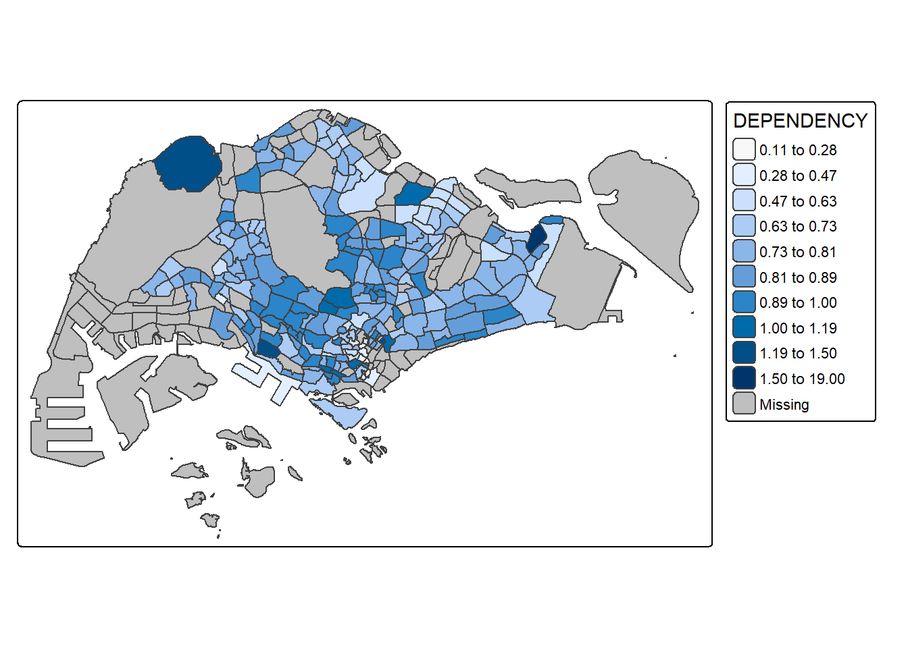
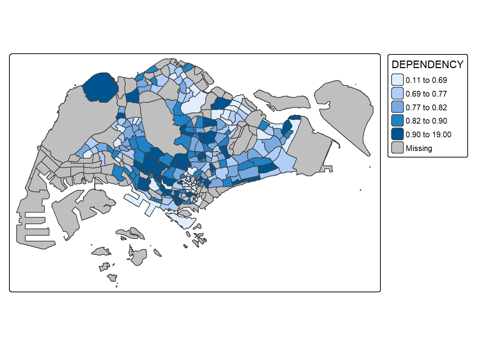
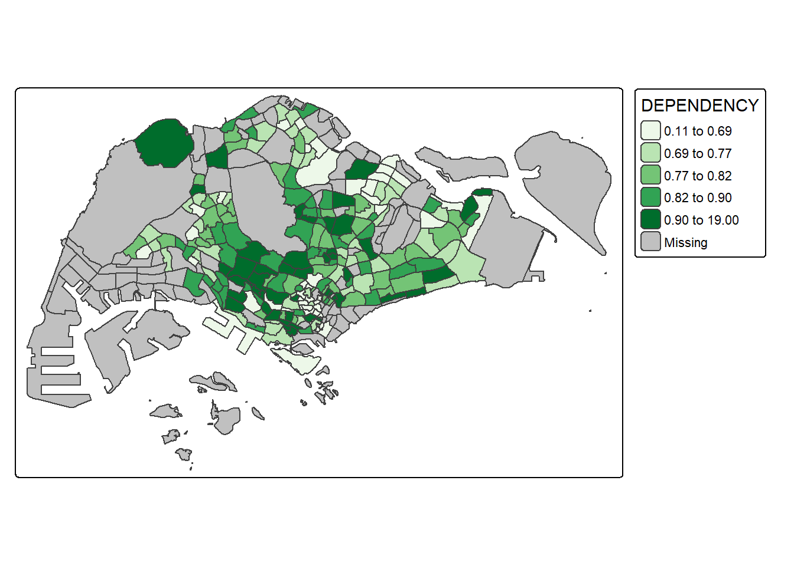

pacman::p_load(sf, tmap, tidyverse)Hands-on Exercise 8 - Part 1
Choropleth Mapping with R
Load necessary packages
Import data
Import Geospatial Data
mpsz <- st_read(dsn = "data/geospatial",
layer = "MP14_SUBZONE_WEB_PL")Reading layer `MP14_SUBZONE_WEB_PL' from data source
`C:\Users\Mylaptop\OneDrive\Documents\trangqd\ISSS608-VAA\Hands-on_Ex\Hands-on_Ex08\data\geospatial'
using driver `ESRI Shapefile'
Simple feature collection with 323 features and 15 fields
Geometry type: MULTIPOLYGON
Dimension: XY
Bounding box: xmin: 2667.538 ymin: 15748.72 xmax: 56396.44 ymax: 50256.33
Projected CRS: SVY21mpszSimple feature collection with 323 features and 15 fields
Geometry type: MULTIPOLYGON
Dimension: XY
Bounding box: xmin: 2667.538 ymin: 15748.72 xmax: 56396.44 ymax: 50256.33
Projected CRS: SVY21
First 10 features:
OBJECTID SUBZONE_NO SUBZONE_N SUBZONE_C CA_IND PLN_AREA_N
1 1 1 MARINA SOUTH MSSZ01 Y MARINA SOUTH
2 2 1 PEARL'S HILL OTSZ01 Y OUTRAM
3 3 3 BOAT QUAY SRSZ03 Y SINGAPORE RIVER
4 4 8 HENDERSON HILL BMSZ08 N BUKIT MERAH
5 5 3 REDHILL BMSZ03 N BUKIT MERAH
6 6 7 ALEXANDRA HILL BMSZ07 N BUKIT MERAH
7 7 9 BUKIT HO SWEE BMSZ09 N BUKIT MERAH
8 8 2 CLARKE QUAY SRSZ02 Y SINGAPORE RIVER
9 9 13 PASIR PANJANG 1 QTSZ13 N QUEENSTOWN
10 10 7 QUEENSWAY QTSZ07 N QUEENSTOWN
PLN_AREA_C REGION_N REGION_C INC_CRC FMEL_UPD_D X_ADDR
1 MS CENTRAL REGION CR 5ED7EB253F99252E 2014-12-05 31595.84
2 OT CENTRAL REGION CR 8C7149B9EB32EEFC 2014-12-05 28679.06
3 SR CENTRAL REGION CR C35FEFF02B13E0E5 2014-12-05 29654.96
4 BM CENTRAL REGION CR 3775D82C5DDBEFBD 2014-12-05 26782.83
5 BM CENTRAL REGION CR 85D9ABEF0A40678F 2014-12-05 26201.96
6 BM CENTRAL REGION CR 9D286521EF5E3B59 2014-12-05 25358.82
7 BM CENTRAL REGION CR 7839A8577144EFE2 2014-12-05 27680.06
8 SR CENTRAL REGION CR 48661DC0FBA09F7A 2014-12-05 29253.21
9 QT CENTRAL REGION CR 1F721290C421BFAB 2014-12-05 22077.34
10 QT CENTRAL REGION CR 3580D2AFFBEE914C 2014-12-05 24168.31
Y_ADDR SHAPE_Leng SHAPE_Area geometry
1 29220.19 5267.381 1630379.3 MULTIPOLYGON (((31495.56 30...
2 29782.05 3506.107 559816.2 MULTIPOLYGON (((29092.28 30...
3 29974.66 1740.926 160807.5 MULTIPOLYGON (((29932.33 29...
4 29933.77 3313.625 595428.9 MULTIPOLYGON (((27131.28 30...
5 30005.70 2825.594 387429.4 MULTIPOLYGON (((26451.03 30...
6 29991.38 4428.913 1030378.8 MULTIPOLYGON (((25899.7 297...
7 30230.86 3275.312 551732.0 MULTIPOLYGON (((27746.95 30...
8 30222.86 2208.619 290184.7 MULTIPOLYGON (((29351.26 29...
9 29893.78 6571.323 1084792.3 MULTIPOLYGON (((20996.49 30...
10 30104.18 3454.239 631644.3 MULTIPOLYGON (((24472.11 29...Import Attribute Data
popdata <- read_csv("data/aspatial/respopagesextod2011to2020.csv")Data wrangling
popdata2020 <- popdata %>%
filter(Time == 2020) %>%
group_by(PA, SZ, AG) %>%
summarise(`POP` = sum(`Pop`)) %>%
ungroup() %>%
pivot_wider(names_from=AG,
values_from=POP) %>%
mutate(YOUNG = rowSums(.[3:6])
+rowSums(.[12])) %>%
mutate(`ECONOMY ACTIVE` = rowSums(.[7:11])+
rowSums(.[13:15]))%>%
mutate(`AGED`=rowSums(.[16:21])) %>%
mutate(`TOTAL`=rowSums(.[3:21])) %>%
mutate(`DEPENDENCY` = (`YOUNG` + `AGED`)
/`ECONOMY ACTIVE`) %>%
select(`PA`, `SZ`, `YOUNG`,
`ECONOMY ACTIVE`, `AGED`,
`TOTAL`, `DEPENDENCY`)Join attribute data and geospatial data
popdata2020 <- popdata2020 %>%
mutate(across(c(PA, SZ), toupper)) %>%
filter(`ECONOMY ACTIVE` > 0)
mpsz_pop2020 <- left_join(mpsz, popdata2020,
by = c("SUBZONE_N" = "SZ"))
write_rds(mpsz_pop2020, "data/rds/mpszpop2020.rds")Choropleth Mapping Geospatial Data Using tmap
Use qtm()
tmap_mode("plot")
qtm(mpsz_pop2020,
fill = "DEPENDENCY")
Add tmap’s elements
tm_shape(mpsz_pop2020)+
tm_polygons(fill = "DEPENDENCY",
fill.scale = tm_scale_intervals(
style = "quantile",
n = 5,
values = "brewer.blues"),
fill.legend = tm_legend(
title = "Dependency ratio")) +
tm_title("Distribution of Dependency Ratio by planning subzone") +
tm_layout(frame = TRUE) +
tm_borders(fill_alpha = 0.5) +
tm_compass(type="8star", size = 2) +
tm_grid(alpha =0.2) +
tm_credits("Source: Planning Sub-zone boundary from Urban Redevelopment Authorithy (URA)\n and Population data from Department of Statistics DOS",
position = c("left", "bottom"))
Draw base map
tm_shape(mpsz_pop2020) +
tm_polygons()
Use tm_polygons() to show distribution of a selected variable
tm_shape(mpsz_pop2020)+
tm_polygons("DEPENDENCY")
tm_fill() and tm_border() for shading and bordering
tm_shape(mpsz_pop2020)+
tm_fill("DEPENDENCY")
tm_shape(mpsz_pop2020)+
tm_polygons(fill = "DEPENDENCY") +
tm_borders(lwd = 0.01,
fill_alpha = 0.1)
Data classification methods of tmap
Specify number of classes
n=5
tm_shape(mpsz_pop2020)+
tm_polygons("DEPENDENCY",
fill.scale = tm_scale_intervals(
style = "jenks",
n = 5)) +
tm_borders(fill_alpha = 0.5)
Self-practice
n=3
tm_shape(mpsz_pop2020)+
tm_polygons("DEPENDENCY",
fill.scale = tm_scale_intervals(
style = "jenks",
n = 3)) +
tm_borders(fill_alpha = 0.5)n=10
tm_shape(mpsz_pop2020)+
tm_polygons("DEPENDENCY",
fill.scale = tm_scale_intervals(
style = "jenks",
n = 10)) +
tm_borders(fill_alpha = 0.5)
n=20
tm_shape(mpsz_pop2020)+
tm_polygons("DEPENDENCY",
fill.scale = tm_scale_intervals(
style = "jenks",
n = 20)) +
tm_borders(fill_alpha = 0.5)
Observation: increasing the number of classes reveals more spatial detail and variation, while fewer classes provide a more simplified, high-level view. As the number of classes increases (Maps 3 and 4), subtle differences in dependency ratios become more visible, allowing for more granular insights. However, this comes with a trade-off, showing more complex legends and overwhelming detail.
Change data classification method
equal method
tm_shape(mpsz_pop2020)+
tm_polygons("DEPENDENCY",
fill.scale = tm_scale_intervals(
style = "equal",
n = 5)) +
tm_borders(fill_alpha = 0.5)
Self-practice
quantile method
tm_shape(mpsz_pop2020)+
tm_polygons("DEPENDENCY",
fill.scale = tm_scale_intervals(
style = "quantile",
n = 5)) +
tm_borders(fill_alpha = 0.5)
kmeans method
tm_shape(mpsz_pop2020)+
tm_polygons("DEPENDENCY",
fill.scale = tm_scale_intervals(
style = "kmeans",
n = 5)) +
tm_borders(fill_alpha = 0.5)bclust method
tm_shape(mpsz_pop2020)+
tm_polygons("DEPENDENCY",
fill.scale = tm_scale_intervals(
style = "bclust",
n = 5)) +
tm_borders(fill_alpha = 0.5)Committee Member: 1(1) 2(1) 3(1) 4(1) 5(1) 6(1) 7(1) 8(1) 9(1) 10(1)
Computing Hierarchical ClusteringObservation: For mapping dependency ratios, Jenks and Quantile are the most suitable methods. Jenks highlights natural groupings in skewed data, making it ideal for identifying areas with unusually high dependency. Quantile ensures equal numbers of areas per class, offering balanced visual representation, but it may group dissimilar values. Equal interval is not effective since the data is unevenly distributed, as it can obscure variation. K-means creates statistically distinct clusters but lacks interpretability. Bclust is least suitable, as it’s designed for binary or hierarchical clustering, not continuous spatial data.
Plotting choropleth map with custome break
summary(mpsz_pop2020$DEPENDENCY) Min. 1st Qu. Median Mean 3rd Qu. Max. NA's
0.1111 0.7147 0.7867 0.8585 0.8763 19.0000 92 tm_shape(mpsz_pop2020)+
tm_polygons("DEPENDENCY",
breaks = c(0, 0.60, 0.70, 0.80, 0.90, 1.00)) +
tm_borders(fill_alpha = 0.5)
Color scheme
ColourBrewer palette
tm_shape(mpsz_pop2020)+
tm_polygons("DEPENDENCY",
fill.scale = tm_scale_intervals(
style = "quantile",
n = 5,
values = "brewer.greens")) +
tm_borders(fill_alpha = 0.5)
Reverse color scale
tm_shape(mpsz_pop2020)+
tm_polygons("DEPENDENCY",
fill.scale = tm_scale_intervals(
style = "quantile",
n = 5,
values = "-brewer.greens")) +
tm_borders(fill_alpha = 0.5)Map layouts
Map legend
tm_shape(mpsz_pop2020)+
tm_polygons("DEPENDENCY",
fill.scale = tm_scale_intervals(
style = "jenks",
n = 5,
values = "brewer.greens"),
fill.legend = tm_legend(
title = "Dependency ratio")) +
tm_borders(fill_alpha = 0.5) +
tm_title("Distribution of Dependency Ratio by planning subzone \n(Jenks classification)")
Map style
tm_shape(mpsz_pop2020)+
tm_fill("DEPENDENCY",
style = "quantile",
palette = "-Greens") +
tm_borders(alpha = 0.5) +
tmap_style("classic")
Cartographic Furniture
tm_shape(mpsz_pop2020)+
tm_polygons(fill = "DEPENDENCY",
fill.scale = tm_scale_intervals(
style = "quantile",
n = 5,
values = "brewer.blues"),
fill.legend = tm_legend(
title = "Dependency ratio")) +
tm_title("Distribution of Dependency Ratio by planning subzone") +
tm_layout(frame = TRUE) +
tm_borders(fill_alpha = 0.5) +
tm_compass(type="8star", size = 2) +
tm_grid(alpha =0.2) +
tm_credits("Source: Planning Sub-zone boundary from Urban Redevelopment Authorithy (URA)\n and Population data from Department of Statistics DOS",
position = c("left", "bottom"))
Drawing Small Multiple Choropleth Maps
Define ncols in tm_fill()
tm_shape(mpsz_pop2020)+
tm_fill(c("YOUNG", "AGED"),
style = "equal",
palette = "Blues") +
tm_layout(legend.position = c("right", "bottom")) +
tm_borders(alpha = 0.5) +
tmap_style("white")
Assign multiple values to at least one of the aesthetic arguments
tm_shape(mpsz_pop2020)+
tm_polygons(c("DEPENDENCY","AGED"),
style = c("equal", "quantile"),
palette = list("Blues","Greens")) +
tm_layout(legend.position = c("right", "bottom"))
Use tm_facets()
tm_shape(mpsz_pop2020) +
tm_fill("DEPENDENCY",
style = "quantile",
palette = "Blues",
thres.poly = 0) +
tm_facets(by="REGION_N",
free.coords=TRUE) +
tm_layout(legend.show = FALSE,
title.position = c("center", "center"),
title.size = 20) +
tm_borders(alpha = 0.5)
Create multiple stand-alone maps with tmap_arrange()
youngmap <- tm_shape(mpsz_pop2020)+
tm_polygons("YOUNG",
style = "quantile",
palette = "Blues")
agedmap <- tm_shape(mpsz_pop2020)+
tm_polygons("AGED",
style = "quantile",
palette = "Blues")
tmap_arrange(youngmap, agedmap, asp=1, ncol=2)
Mappping Spatial Object Meeting a Selection Criterion
tm_shape(mpsz_pop2020[mpsz_pop2020$REGION_N=="CENTRAL REGION", ])+
tm_fill("DEPENDENCY",
style = "quantile",
palette = "Blues",
legend.hist = TRUE,
legend.is.portrait = TRUE,
legend.hist.z = 0.1) +
tm_layout(legend.outside = TRUE,
legend.height = 0.45,
legend.width = 5.0,
legend.position = c("right", "bottom"),
frame = FALSE) +
tm_borders(alpha = 0.5)